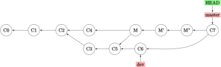

高级合并与冲突处理
本章介绍如何应对合并分支时的冲突。
中断合并
当一次合并操作出现问题，你可以使用 --abort 选项中断合并：
$ git merge --abort
该操作会恢复到你合并前的状态——如果你合并前的目录没有未提交、未提交的修改，它可能出现问题；此外的情形它总是可靠的。
忽略空白符变更
如果要合并的文件有空白的问题（比如将制表符格式化为空格）,可以使用 -Xignore-all-space （忽略已有空白处的空白修改） 或 -Xignore-space-change （忽略所有空白修改）。
手动合并文件
这里需要一个特别的 git show 命令，可以将同一文件的不同版本保存到当前目录：
$ git show :1:hello.md > hello-ancestor.md
$ git show :2:hello.md > hello-current.md
$ git show :3:hello.md > hello-branch.md
其中，数字 1~3 分别表示共同祖先、当前分支、要合并的分支。然后，使用罕用的 merge-file 命令来合并它们：
# ... 做一些修改 ...
$ git merge-file -p \
hello-ancestor.md hello-current.md hello-branch.md > hello.md
完成了合并后，可以通过以下命令查看修改的内容：
$ git diff --ours # 合并与当前分支文件的不同
$ git diff --theirs # 合并与要合并的分支文件的不同
$ git diff --base # 合并怎样改动了共同祖先
选项 -b 可以忽略空白变更的修改。
最后，新创建的三个 md 文件都没有用了，我们可以用 clean 命令清除：
$ git clean -f
Removing hello-ancestor.md
Removing hello-current.md
Removing hello-branch.md
检出冲突
当 merge 命令检查到冲突时，文件中会有类似这样的片段（摘自官方手册）：
def hello
<<<<<<< HEAD
puts 'hola world'
=======
puts 'hello mundo'
>>>>>>> mundo
end
我们在 冲突处理 中已经介绍过，"<" 与 "=" 之间是当前分支的内容，而 "=" 与 ">" 之间是待合并分支的内容。可有时你并不清楚应当采用哪个版本，因此你希望查看它们的共同祖先的内容。使用 --conflict=diff3 （默认是 =merge ） 会重新生成冲突片段，但添加共同祖先内容在中间：
$ git checkout --conflict=diff3 hello.rb
...
def hello
<<<<<<< ours
puts 'hola world'
||||||| base
puts 'hello world'
=======
puts 'hello mundo'
>>>>>>> theirs
end
这样你就清楚地知道，共同祖先使用的是 "hello world"，与两者都不一样。如果你偏好这种格式，可以让 git 把合并冲突的默认格式设置成 diff3 模式：
$ git config --global merge.conflictstyle diff
checkout 命令也有 --ours 与 --theirs 选项，用以选择对应提交的版本而抛弃另一个提交的版本。这是一种无需合并的快速方式，尤其是对二进制文件的版本控制而言。
查询日志
合并冲突有时需要借助日志来解决，尝试：
# 显示两个分支在共同祖先之后的提交
$ git log --oneline --left-right HEAD...MERGE_HEAD
# 显示两个分支中与冲突文件相关的提交
$ git log --oneline --left-right --merge
撤销合并提交
假如你错误地进行了合并，尚未进行新的更改。那么可以使用：
$ git reset --hard HEAD~
这是因为 HEAD 分支指向 master 上的合并提交，向前回退到父提交则是移动 HEAD 到 master 合并前的那个版本。至于并入的分支的指针，它并没有移动过。
如果你的仓库已经推送到远程，那么上述方法是不合适的 ；请记住，reset 命令会更改日志，在共享工作流中需要避免。这时的替代方案是 revert 命令：
$ git revert -m 1 HEAD
选项 -m 1 表示保留该合并提交的第一父提交（对于将其他分支合并到 master 分支的情形，即指位于 master 分支的父提交）。尚未完成的合并提交中，第一父提交是 HEAD，第二父提交是并入分支（假设叫 dev）的最新提交。上述命令会撤销从第二父提交中引入的更改，同时保留第一父提交中的所有内容。注意：本命令实质上在合并提交 M 后**新建**了一个提交 M'，但 M 仍然被保留在了日志中。

这里 M' 实质与 C4 的快照相同。
这样做的问题是，如果你再尝试合并，git 不会响应你的请求：
$ git merge dev
Already up-to-date.
也就是 C5 并不能和 M' 合并；因为 C5 已经可以由 M' 回溯到达，git 认为没有合并可以做。更不妙的是，假如你在 dev 分支又更新了内容（提交 C6），请**不要**与 M' 直接合并，否则 C3 与 C5 这两个位于上一次合并之前的更改不会被加入这次合并（而上一次合并，也就是 M，实质上又被 M' 遮盖了），你就会在这次合并后发现 C3 与 C5 的内容并没有被加入到新的合并提交中去。
解决方法是利用 revert 命令，将 M' 再反转回去，“恢复” M 这个合并提交（因为 M 是包含 C3 与 C5 内容的），之后再进行合并：
$ git revert # revert M'
$ git merge dev
这样新建的 M'' 提交实质上等同于之前的合并提交 M。
{kind=link}
压缩合并
有时你的开发分支 dev 可能会充满无意义的提交与不清晰的历史（虽然我建议你尽量避免这种情形），因此向主分支 master 合并时可能会不想保留这些记录。那么压缩合并 --squash 正是你的救星。
重要
压缩合并并不是真的合并了分支，它只是将待合并分支的改动复制到了当前分支，从而允许用户将待合并分支的众多提交“压缩”成当前分支的单个提交。
$ git merge --squash dev
$ git commit -m "Update ..."
注意到在上述操作之后，dev 分支并没有真的被合并到 master 分支。如果 dev 分支仍在将来会被合并，不可避免地，你将把它之上的提交历史也合并到 master 分支。因此，我建议只对临时本地分支使用压缩合并，并在压缩合并后删除该分支。
偏好合并
如果你预计合并中会出现冲突，但你只要求 master 分支的内容覆盖 dev 分支的内容，你可以使用 -Xours 选项：
$ git merge -Xours dev
正如上文提及的，“ours” 指代当前分支，“theirs” 指代待合并分支。因此你也可以类似地使用 -Xtheirs 选项。多说一句，这两个选项对于较少用到的 merge-file 命令也生效。
伪合并*
伪合并（fake merge）是指一种欺骗 git 创建合并提交的方式。它使用 -s 选项，指定一个伪合并策略（通常是 ours ）：
$ git merge -s ours dev
作用是将当前分支的最新提交直接复制为这个合并提交（即它完全不管来自 dev 的最新提交是什么），合并后可以发现 HEAD 与 HEAD~ 完全相同。例如，你的 bugfix 分支解决了一个 master 分支的问题。考虑到你的开发分支 dev 尚不能向 master 合并，你需要做的是：
$ git checkout master
$ git merge -s ours bugfix
$ git checkout dev
$ git merge bugfix
...
$ git branch -d bugfix
向 master 分支伪合并 bugfix 分支（即使它已经真的合并过了）的好处是欺骗了 git，让它认为这两个分支已经合并过。以后将 dev 分支向 master 分支合并时，就不会有来自 bugfix 分支的冲突。